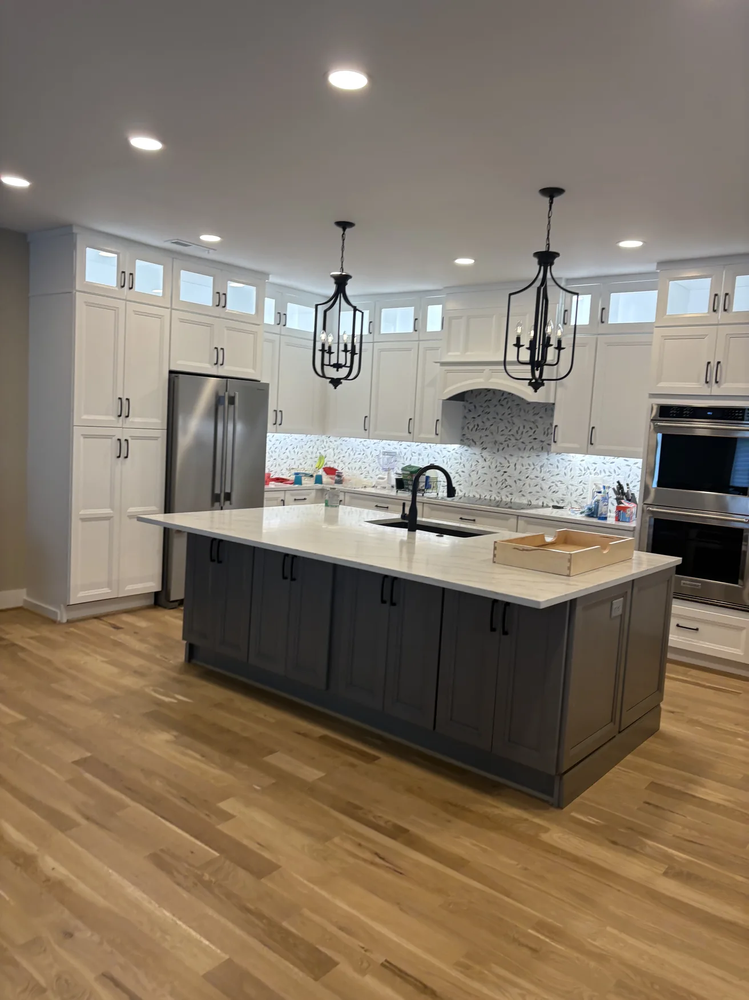

Layout & clearances
Cabinet runs, appliance locations, working clearances and island sizes.


Home / Kitchen cabinetry
Kitchen cabinets, islands, pantry storage and trim—with careful fitting and finish work for everyday family kitchens and more elaborate designs alike.
KITCHEN CONSTRUCTION
Good kitchens are built on correct measurements, workable clearances and storage that does its job.
Our scope includes cabinet runs, islands, pantries, trim, shelving and coordination around appliances and countertops.
For many layouts, a well-selected cabinet line is a smart starting point—not a compromise. It can free up the budget for the details that matter, while custom construction remains an option when the room truly calls for it.
Compare cabinet-line options →
KITCHEN PROJECTS
Completed rooms, islands, cabinet runs and finished details.
CONSTRUCTION DETAILS
Every kitchen has its own traffic patterns, storage needs and finish details. We plan around all three.
Cabinet runs, appliance locations, working clearances and island sizes.
Pantries, deep drawers, corner solutions, hinges and pull-outs.
Wood species, painted finishes, trim, door profiles and countertop fit.
PROJECT INQUIRIES
Share the layout or a few photos and measurements to start an estimate.